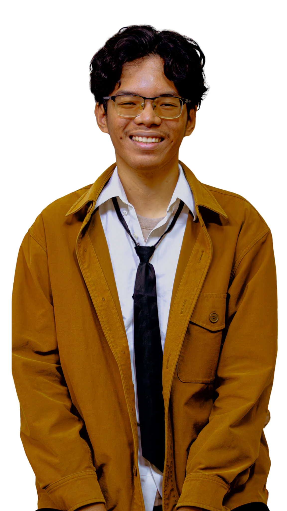

Hello, I am
Xyryle Adrian B. Cator
A passionate web developer dedicated to building high-performance, accessible, and visually stunning digital experiences. Transforming complex problems into elegant, user-centric solutions.
code
Web Developer
